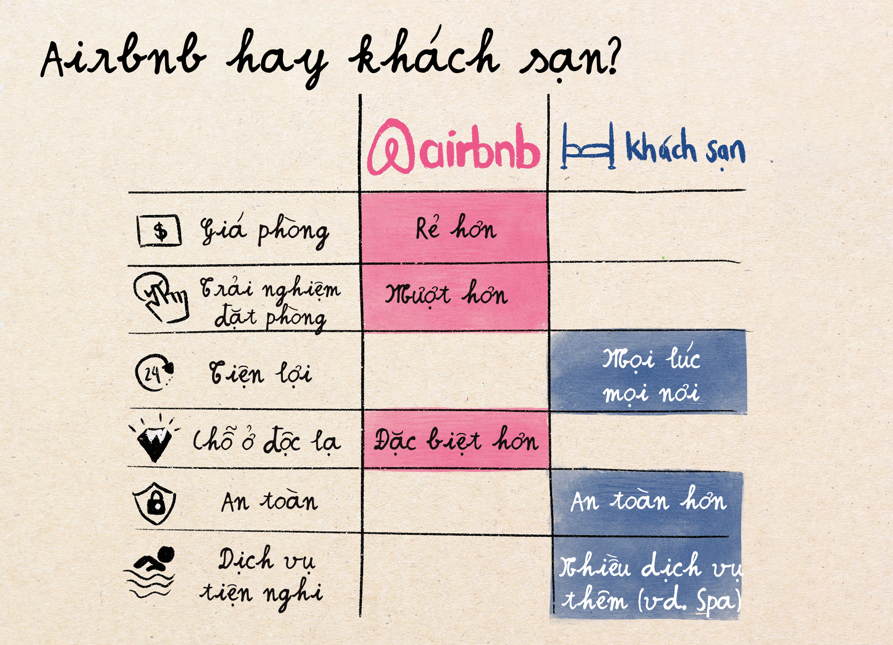
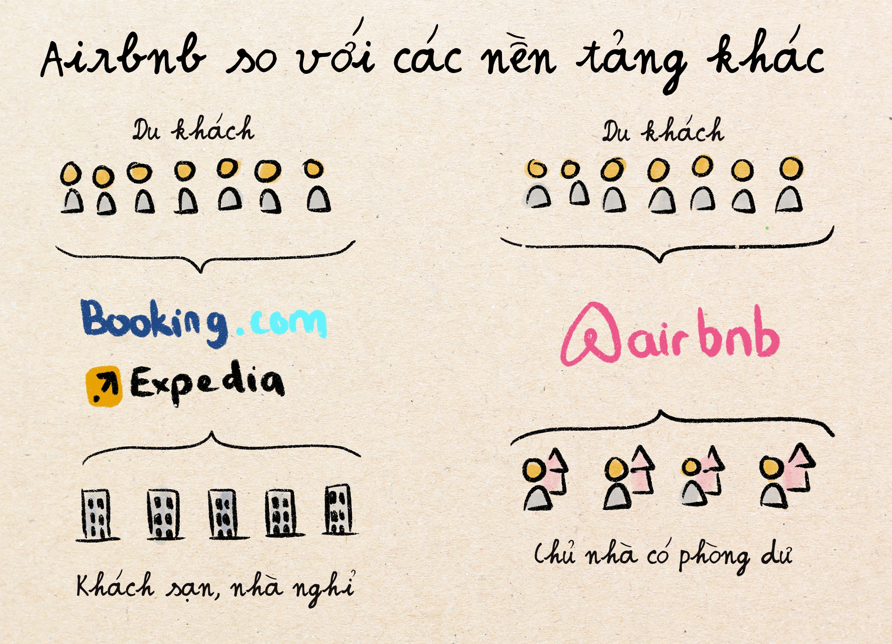
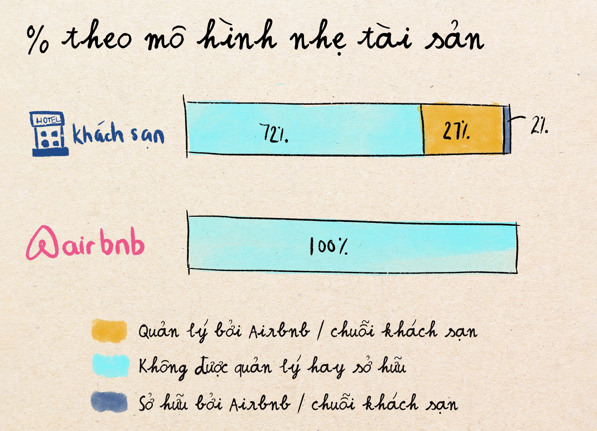
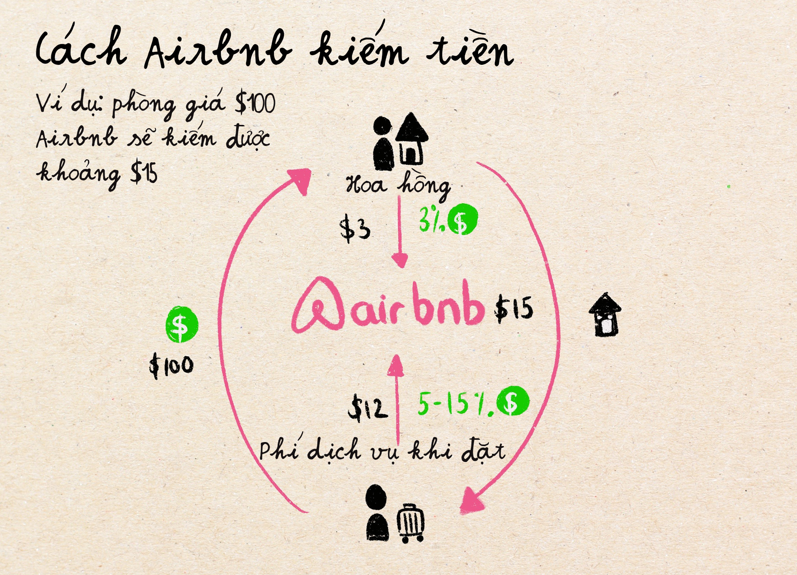
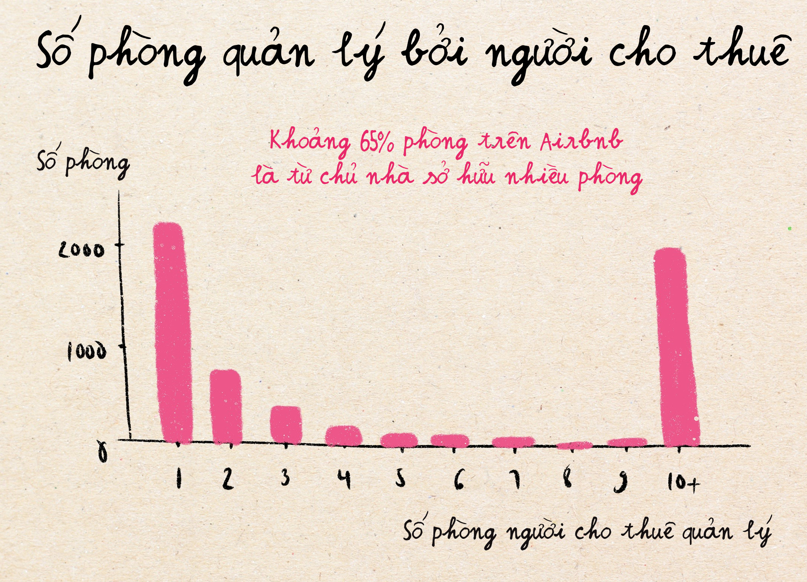
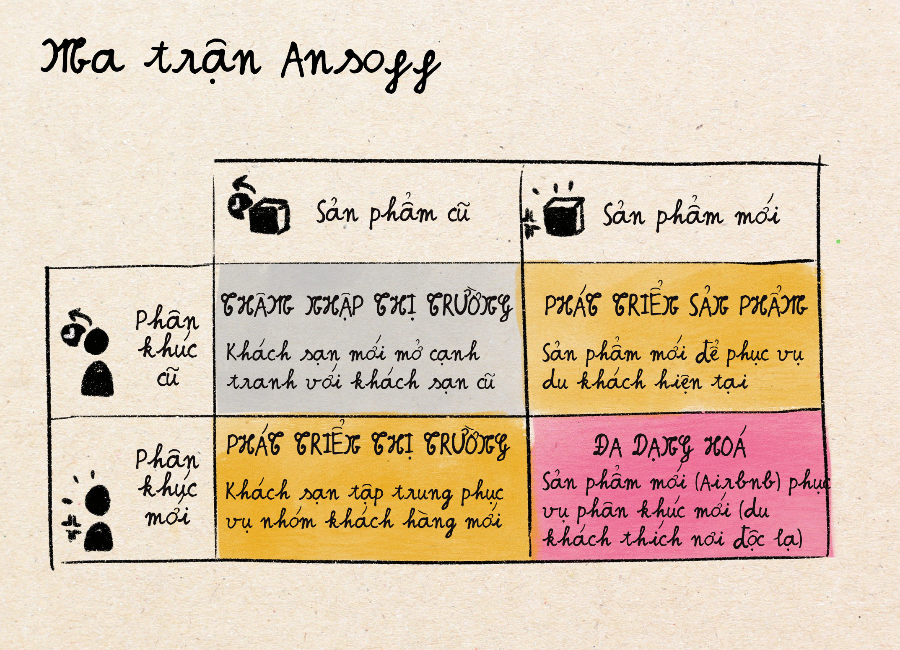

Định nghĩa: Sharing economy, hay kinh tế chia sẻ, là mô hình kinh tế nơi mọi người có thể chia sẻ tài sản, dịch vụ hoặc sản phẩm dư thừa của họ cho người khác thông qua các ứng dụng hoặc nền tảng kỹ thuật số.
Chắc hẳn nhiều người từng nghĩ rằng Airbnb là công ty đầu tiên giới thiệu và đẩy mạnh khái niệm "nền kinh tế chia sẻ" bằng cách cho phép bất cứ ai cho thuê phòng ngủ trống trong nhà của mình với những du khách cần chỗ ở. Nhưng thực chất họ không phải là công ty phát minh ra khái niệm này (câu trả lời đúng là eBay).
Không những thế, có rất nhiều nhận thức sai lầm về mô hình kinh doanh của Airbnb mà phần lớn những ai không làm ngành dịch vụ khách sạn – nhà hàng – du lịch (hospitality industry) hiểu được. Trong bài viết này, chúng ta sẽ phá vỡ 3 nhận thức sai lầm lớn nhất về Airbnb và đào sâu vào lý do thực sự tại sao họ lại trở thành một trong những con kỳ lân lớn nhất trong thập niên 2010.
Doanh thu vào 2023 của Airbnb là $9.9 tỷ USD. Còn của ngành khách sạn toàn cầu thì khoảng $600-700 tỷ USD. Nếu tính về số đêm phòng được đặt trên Airbnb và so với khách sạn thì sự khác biệt cũng tương tự. Thế nhưng với xu hướng Airbnb lan toả khắp nơi, rất nhiều người nghĩ rằng Airbnb thống trị thị trường và đang đe doạ sự sống còn của ngành khách sạn.
Sự thật là: Airbnb chỉ thống trị một phân khúc cụ thể của thị trường, không phải toàn bộ thị trường. Phân khúc này bao gồm những người dùng như sau:
Nhưng khách sạn vẫn sở hữu những phân khúc có khả năng chi trả cao hơn và vì thế tạo ra nguồn doanh thu lớn hơn rất nhiều như:
Bạn nghĩ xem, khi bạn đi công tác để gặp khách hàng, hay đặt phòng cho tuần trăng mật, bạn có liều đặt phòng ở trong nhà người khác không? Những đối tượng có tiền và cần tiện nghi đầy đủ không phải là đối tượng của Airbnb. Thế nên trên thực tế, Airbnb chỉ là một con cá lớn bơi trong một cái hồ bé; họ thống trị một vài phân khúc nhưng nó không đồng nghĩa với việc thống trị thị trường. Dữ liệu tăng trưởng cũng chứng minh điều này: trong khoảng thời gian nhiều năm khi Airbnb đang nổi lên và hot dữ dội thì ngành khác sạn nhìn chung và thị trường du lịch nói riêng cũng tăng trưởng nhanh. Airbnb tạo ra nguồn cung mới cho những người có nhu cầu khác biệt, chứ không ăn đi mấy nguồn khách của các khách sạn khác.
Booking.com, Expedia, Hotels.com là những nền tảng kết nối du khách với chỗ ở trực tuyến hoạt động nhiều năm trước Airbnb. Booking.com được thành lập năm 1996, khi mà internet còn chậm như rùa. Những nền tảng này hiện là thị trường hai chiều với nhiều chức năng bao gồm những thứ Airbnb cũng có như hệ thống đánh giá (rating) từ người tiêu dùng, và cả cơ sở hạ tầng hỗ trợ khách hàng, v.v.
Mặc dù không phải là công ty phát minh ra nền tảng kết nối người du lịch với nơi ở khi du lịch, Airbnb mang tới một điểm mới, đó là họ cho phép bên cung cấp nơi ở trên nền tảng là bất kỳ ai có nhà hoặc phòng dư trong nhà. Nguồn cung này trước đó thường chỉ thu hẹp trong những tổ chức thương mại, nhà nghỉ, khách sạn thông thường.
Đây còn được gọi là mô hình "nhẹ tài sản", tiếng anh là Asset-light. Nó giúp giảm thiểu sở hữu tài sản cố định vật lý (như nhà máy, máy móc, bất động sản) bằng cách tận dụng các nguồn lực bên ngoài như đối tác, thuê nhà thầu, hoặc sử dụng nền tảng kỹ thuật số. Mục tiêu là giảm chi phí đầu tư vốn, tăng tính linh hoạt và khả năng mở rộng thị trường nhanh chóng của công ty.
Với Airbnb chẳng hạn, phòng ốc mà họ đăng trên app đều là của người tham gia vào nền tảng – Airbnb không hề sở hữu bất kỳ một căn phòng nào, và vì thế rủi ro phòng không có người đặt, hoặc phòng ốc có vấn đề cần sửa chửa, chỉnh chu, Airbnb đều không phải lo. Chính vì thế độ rủi ro của họ có vẻ thấp hơn hẳn so với các khách sạn lớn khác.
Nhưng trên thực tế, ngành khách sạn thực ra đã chuyển qua hệ thống này từ nhiều thập kỷ rồi. Những ông trùm khách sạn mà bạn hay nghe tới như Mariott, Hilton, IHG, thực ra chỉ sở hữu dưới 2% khách sạn mang tên họ. Họ chủ yếu kiếm tiền thông qua việc cấp phép sử dụng thương hiệu và hợp đồng giúp quản lý khách sạn cho các chủ bất động sản khác - những người có đất và có tiền xây khách sạn để kinh doanh. Trong mô hình cho thuê / nhượng quyền sử dụng thương hiệu này, các công ty mẹ (Mariott, Hilton, v.v.) sẽ giúp đào tạo nhân viên và cài đặt hệ thống đặt phòng, đặt ra tiêu chuẩn hoạt động, v.v. và thay vào đó được chia doanh thu 4-6% doanh thu phòng ngoài các khoản phí khác. Nhờ có mô hình này, các thương hiệu khách sạn lớn không chỉ lấy được nhiều lợi nhuận mà không sợ rủi ro, mà còn có thể mở rộng nhanh chóng ra toàn thế giới.
Mặc dù không phải là người phát minh ra mô hình nhẹ tài sản, Airbnb mở rộng mô hình này để bao gồm người dân thường chứ không chỉ những ông trùm có tiền xây khách sạn trên những mảnh đất lớn. Hộ phân tán nguồn "cung" đến tất cả mọi người.
Nếu Airbnb không phát minh ra những khái niệm / mô hình kinh doanh trên, họ đã làm gì để được tung hô đến vậy?
Đổi mới 1 nằm ở chỗ họ biết cách kết hợp các khái niệm đã có và áp dụng vào để mở rộng dân chủ hoá ngành khách sạn, phục vụ phân khúc trước giờ chưa được đáp ứng nhu cầu.
Cụ thể là, Airbnb lấy các khái niệm như nền tảng du lịch trực tuyến (từ Booking.com, Expedia), mô hình nhẹ tài sản (từ nhiều thập kỷ trong ngành khách sạn), và thị trường ngang hàng (peer-to-peer, từ eBay, Craigslist). Sau đó kết hợp chúng và áp dụng mở khóa nguồn cung mới: phòng trống trong nhà của tất cả mọi người. Bất cứ ai cũng có thể là chủ nhà và cạnh tranh với Hilton Đây là "dân chủ hoá" nguồn cung.
Hơn thế nữa, như đã phân tích ở phần 1, đối tượng người dùng mục tiêu của Airbnb có nhu cầu khá khác biệt với khách sạn và có mong muốn trải nghiệm mang tính địa phương độc đáo, rẻ. Đây là phân khúc mới trong ngành.
Bài học ở đây là: Đổi mới không chỉ cần dựa vào phần phát minh đơn lẻ, nó còn có thể đến từ sự kết hợp các ý tưởng và mô hình kinh doanh độc đáo cho đối tượng mới.
Trước khi có Airbnb, thuê phòng từ một người lạ trên internet nghe thực sự điên rồ và không ai dám làm cả. Cũng giống như trước Uber không ai dám leo lên đi xe của người lạ mà không phải taxi. Để vượt qua trở ngại "thiếu niềm tin" từ khách hàng này, Airbnb đã tạo ra một hệ thống như sau:
Một lần nữa, những tính năng trên không phải mới: eBay trước đó đã có sử dụng hệ thống đánh giá đồng thời, PayPal có hệ thống bảo vệ "tiền thanh toán" bằng cách giữ tiền trong một khoảng thời gian cố định, v.v. Nhưng sự kết hợp các tính năng này và áp dụng vào ngành khách sạn là một combo mới, giúp giải quyết vấn đề trước đây chưa được giải quyết trong ngành cho thuê phòng du lịch.
Airbnb ra mắt vào tháng 8 năm 2008 trong một bối cảnh đặc biệt:
Bối cảnh này thực sự hoàn hảo để tung ra Airbnb.
Nói tóm lại, để có cơ hội trở thanh kỳ lân khởi nghiệp, một ý tưởng khởi nghiệp thường phải:
Mặc dù thành công rạng rỡ trong nhiều năm, Airbnb đang dần mất đi sự quyến rũ trong 2-3 năm đổ lại và càng ngày càng hoạt động như một chuỗi khách sạn lớn.
Trong những ngày đầu, lời chào hàng của Airbnb khá đơn giản: "Tại sao lại trả $150 cho khách sạn khi bạn có thể ở trong căn hộ của người địa phương chỉ với $60?"
Còn bây giờ, trải nghiệm đặt trên Airbnb điển hình sẽ như thế này:
Bỗng nhiên số tiền bạn phả trả cho một phòng ở khách sạn Marriott ($200) với bữa sáng miễn phí và hồ bơi trông lại tốt hơn.
Nhưng vì sao giá của Airbnb bỗng nhiên lại tăng cao đến vậy? Vì trong những ngày đầu, Airbnb cũng như những người cho thuê trên nền tảng của họ cố ý "hạ thấp" hoặc "trợ cấp" giá bằng cách giảm đi các chi phí cần thiết như phí quản lý, dịch vụ. Đặc biệt là Airbnb khi là một khởi nghiệp kỳ lân với rất nhiều nguồn tiền đầu tư, việc giảm phí để chiếm thị phần trước là một chiến lược khá phổ biến. Thế nhưng sau nhiều năm, họ phải bắt đầu lấy phí thật để kiếm được lợi nhuận cho các nhà đầu tư. Tương tự như vậy, những người cho thuê trước đó sẽ tự dọn dẹp phòng, quản lý tất cả mọi thứ mà không lấy phí lao động. Nhưng càng làm lâu dài, việc đó sẽ càng khó và họ cần phải thuê nhân viên dọn dẹp cho tiện. Phí vì thế mà tăng lên.
Không những thế, Airbnb còn có nhiều bất lợi hơn so với khách sạn vì khi các khách sạn có thể giảm thiểu các chi phí dịch vụ khách hàng này vì họ phục vụ nhiều phòng cùng một lúc, có đội bảo trì, dọn dẹp, v.v. tại chỗ với quy trình đào tạo nhất quán, Airbnb phải hợp đồng với nhiều nơi để phục vụ nhiều địa điểm khác nhau. Kết quả là chi phí đắt đỏ hơn, dịch vụ ít chuyên nghiệp và nhất quán hơn so với dịch vụ trong khách sạn.
Hậu quả nặng nề là Airbnb mất đề xuất giá trị chính của họ: rẻ hơn khách sạn.
Một trong những đổi mới mình giải thích trong phần trên là việc Airbnb giúp xây dựng niềm tin cho khách hàng khi thuê phòng từ người lạ. Tuy nhiên khi họ mở rộng quy mô từ 100.000 phòng ban đầu, tới hơn 7 triệu phòng vào thời điểm hiện tại, hệ thống này bắt đầu lung lay.
Với số lượng phòng lên tới nhiều triệu lượt đăng, Airbnb không thể xác minh chất lượng tốt như trước nữa. Và nền tảng trở nên ồn ào, nhiều rủi ro hơn. Kết quả là ngay cả khi bạn tìm được một phòng với giá tốt trên Airbnb, chất lượng và trải nghiệm không còn đáng tin nữa. Nó giống như chơi một canh bạc vậy.
Trong khi đó với Marriott, Hilton và các chuỗi khách sạn khác, bạn biết chính xác bạn sẽ nhận được gì và chất lượng như thế nào.
Ban đầu, Airbnb đầy những nơi ở thú vị: Chủ nhà là một nghệ sĩ địa phương, căn hộ có cá tính, ở các vị trí độc lạ, v.v. Nhưng hiện tại, phần lớn các phòng đăng trên Airbnb được sở hữu bởi các nhà thầu chuyên nghiệp quản lý nhiều bất động sản cùng lúc. Theo thông số, khoảng 60% lượng phòng trên Airbnb ở nhiều thành phố được quản lý bởi chủ nhà với nhiều phòng để kinh doanh. Một số chủ nhà có thể quản lý tới hơn 50 phòng / địa điểm một lúc.
Để hoạt động hiệu quả hơn, những chủ nhà này sẽ mua hoặc thuê nhiều phòng / nhà / bất động sản, trang bị chúng giống hệt nhau, thuê cùng một dịch vụ dọn dẹp, sử dụng chatbot để nhắn tin tự động cho khách thuê, không bao giờ gặp mặt khách mà chỉ dựa vào giao tiếp trên ứng dụng Airbnb.
Bạn có nghe quen không? Nó y như là quản lý một khách sạn, chỉ có điều là… thủ tục với khách hàng rắc rối lằng nhằng hơn. Trải nghiệm độc đáo chân thực của địa phương không còn nữa vì thuê chỗ nào cũng có vẻ như nhau. Sự thành công của Airbnb, trớ trêu thay, thu hút các nhà kinh doanh chuyên nghiệp và kết quả là Airbnb trở thành phiên bản nhạt nhẽo hơn, đắt hơn của những gì họ hứa hẹn ban đầu.
Vấn đề này không phải là chỉ riêng Airbnb trải qua, nó cũng là một vấn đề mà nhiều nền tảng công nghệ "kỳ lân" đi qua:
Đây là một nghịch lý của mô hình nền tảng: Điều khiến các nền tảng đặc biệt ban đầu thường sẽ dần bị phá vỡ khi quy mô tăng nhanh. Các nền tảng này một lúc nào đó sẽ mất đi cái duyên ban đầu của chúng, và trở thành thứ mà nó được phát minh ra để phá vỡ.
Vì sự bùng nổ của các nhà đầu tư chuyên nghiệp mua phòng và biến chúng thành phòng cho thuê trên Airbnb, nhiều người dân thành phố bắt đầu cảm thấy cuộc sống của họ thay đổi: tiếng ồn tăng vọt, giá cho thuê nhà xung quanh cho cư dân cũng tăng vì ít chỗ thuê cho người dân ở bình thường, mối lo ngại cho an toàn của khu phố cũng tăng vì có thêm nhiều người lạ tới ở, v.v.
Công chức thành phố bắt đầu phản kháng với nhiều quy định mới như yêu cầu đăng ký giấy phép cho thuê Airbnb, giới hạn số ngày thuê mà chủ trọ có thể đăng mỗi năm, cấm thuê ở một số khu vực nhất định, v.v. Airbnb cũng đấu tranh chống lại những quy định mới này một cách quyết liệt với nhiều vận động hành lang, chính trị. Sự đối đầu căng thẳng giữa hai bên: Airbnb và chính phủ địa phương sẽ tiếp tục và ảnh hưởng tới khả năng phát triển của Airbnb ở nhiều thành phố.
Bài viết lần này đi sâu hơn vào cách kết hợp cái cũ và áp dụng vào phân khúc mới để sáng tạo ra sản phẩm mới thành công, nhưng cũng phân tích rõ thành công đó không phải là cố định. Khi một công ty mở rộng quy mô hoạt động, việc thay đổi hướng đi và đề xuất giá trị (value proposition) là không thể tránh khỏi.
Trước khi kết thúc bài viết này, mình muốn giới thiệu thêm một framework / khái niệm nữa mình thường dùng khi phân tích chiến lược: Ma trận Ansoff. Đây là một công cụ thường được sử dụng để phân tích chiến lược phát triển kinh doanh dựa trên hai yếu tố chính: thị trường (phân khúc) và sản phẩm. Nhưng mình cũng hay dùng nó để phân tích những chiến lược cho một khởi nghiệp nhảy vào thị trường đã bão hoà.
Là một công ty mới, bạn có thể có 4 chiến lược như sau:
Chiến lược thứ nhất thường được áp dụng khi thị trường chưa bão hoà và có nhiều cơ hội cho tay chơi mới. Chiến lược 2 và 3 là khá phổ biến vì nó tập trung vào phát triển cái mới nhưng chỉ trên một trục chiến lược. Chiến lược 4 là khó nhất và thường là nơi mà nhiều công ty kỳ lân công nghệ khi mới ra đời tập trung vào.
Một framework khá đơn giản nhưng mình nghĩ là khá hữu dụng trong phân tích chiến lược kinh doanh.